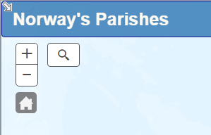
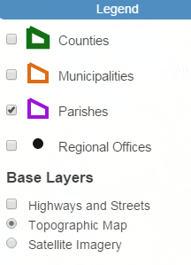
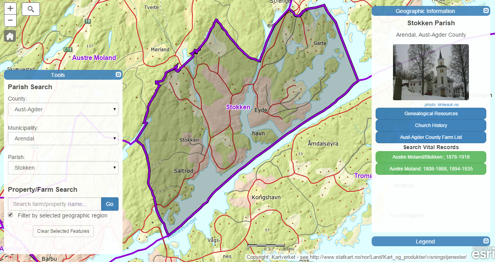
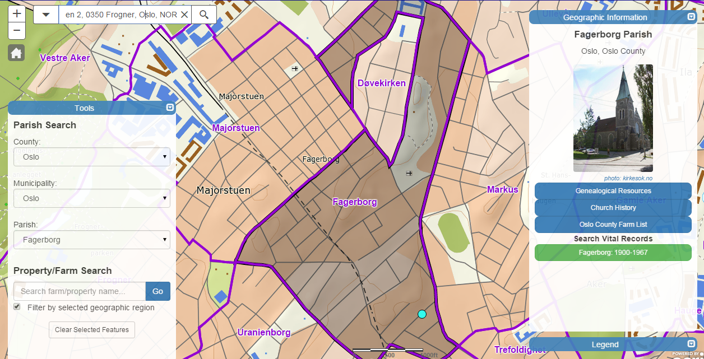
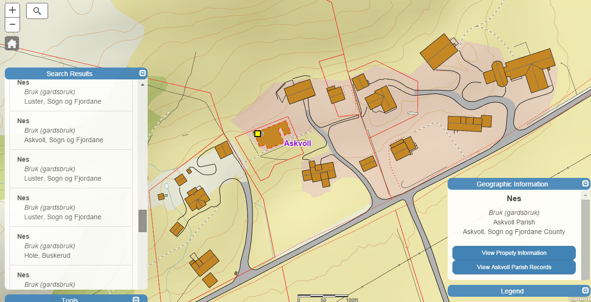

The image to the left resembles the top left portion of the home screen. The buttons available here are primarily for map navigation purposes. The plus and minus buttons allow you to zoom in and out, while the "home" button will return you to the initial extent of the map once clicked.  You'll also notice a small arrow in the top left corner of the image pointing towards the bottom right corner. When clicked, this opens an overview map that gives geographic context to the current extent of the map. This is particularly useful when the map is zoomed in very closely on the parish, city and property levels.
The button symbolized with a magnifying glass allows you to search and zoom to parishes, municipalities, counties, or street addresses. See the Parish Search topic below for more details on this tool. It is important to note that this button is not designed for search farm or property names. To use this functionality, see the Property (Farm) Search topic below.
The image on the right depicts the legend, which is located on the bottom right portion of the map. Here you can toggle various layers on and off, including parishes, municipalities, counties, and satellite imagery.
This application allows you to search and view parish geography, history, and genealogical resources three different ways.
The dropdown menus in the "Tools" section to the left of the map allow you to select counties, municipalities, and parishes by jurisdiction. As you select a value from one dropdown, the remaining dropdowns will autmatically populate with their appropriate values and the map will automatically highlight and zoom to the selected geography.  In addition to zooming to the region, a side panel will appear on the right side of the map displaying information for the region. On the parish level you will see links to general, historical and farm information for the parish along with links to the Norwegian Digital Archives to search vital records for the region. This side panel will appear when a region is selected via any of the methods listed below. Upon entering a county name in the county dropdown, the names of all municipalities and parishes within that county are listed in their dropdowns.
The search bar allows you to search any county, municipality, and parish in Norway with text input. As you type text, the names of geographic regions that match the spelling will appear in a suggestion dropdown in bold. You will notice that other suggestions are made for regions whose names don't match the search text. These results indicate regions under the jurisdiction of higher-level regions (e.g. parishes within counties). For example, in the image above, the user is typing "Hedmark" in the search bar for Hedmark County. Exact matches are made for "Hedmark" county and "Heddal" parish. The other municipalities and parishes being suggested belong to Hedmark County.
By default, the search bar searches everything: counties, municipalities, parishes, and addresses. You can specify which source you would like to restrict your search to by clicking the arrow to the left of the search bar (e.g. select "Parishes" to restrict your search to only parishes).
You may also use the search bar to search for an address. Once an address is entered, a marker will be placed on the map at the location of the address and the parish containing that address will be selected and display its information.
Upon zooming to an appropriate level in the map, you will notice the boundaries of parishes appear as purple lines along with their names. You can center and zoom to a parish and view its pertinent geographic information by simply clicking the region directly on the map. You may also do the same for counties and municipalities. To do so, however, you must turn on each of those sets of boundaries in the legend. Note that if multiple boundaries are turned on simultaneously, the highest geographic level will be selected when clicked. For example, if municipal and parish boundaries are both turned on, the municpality will be selected. If all are turned on, the county will be selected. Only the parishes are on by default.

Below the dropdowns in the Tools menu you will see a text box for searching farm/property names. This allows you to search any property nationwide by its name. Note that this search returns results of all property types, not just farms. When performing searches you may get additional results to churches or other buildings. Property types are listed in the list of results in addition to the name. When searching for farms look for results that contain gaard in the property type.
A nice feature of this search is that you can filter your results based on the region you have selected on the map. This is enabled when the checkbox below the farm search bar is checked. It is checked by default. If you would rather not limit your results based on your selected county or parish, simply uncheck the box. Be aware, however, that this may increase the time for performing the search. Because the search can be exhaustive, farm searches may take several seconds to complete.
If the search results aren't what you expected, it may be because of one of several reasons. Because geographic boundaries have changed over time (these boundaries reflect parishes as they were in 1979) the property may not reside in the current boundary you are using to filter. Uncheck the filter option and run the search again to avoid this issue. Also, check the spelling of the property name. Many property names contain multiple spellings, only one of which is used in this search. You can view alternate spellings by viewing information about the farm in Oluf Rygh's Norwegian farm name database. You can view the list of farms in the county by clicking the farm list option in the county or parish information box in the map.
It may also be helpful to use the asterisk character as a wildcard symbol in the search. For example you may not recall the spelling of the farm name "Dønnestad" in Tveit, Tveit, Vest-Agder. Does it have one "n" or two? Does it use an "o" or an "ø". To overcome this issue, simply type "D*n*" in the search after selecting Tveit parish. By doing this you are saying, "I know the farm starts with a D, and N is the third letter, but I don't know any of the other letters". Now click "Go" and you will get one result for the correct farm name. Very convenient! This is especially useful when dealing with the special characters Æ, Ø, and Å. The search only finds exact matches, so these characters must be used if they appear in the property name. You can enable the Norwegian keyboard on your computer by following the steps in this article or you can use the asterisk as a replacement.
See the above image for reference. Here I typed a very popular property name in Norway: "Nes". And searched the entire country. I received 50 results, which is the maximum number for any given search. A list appears on the left side of the map and the locations of each property are plotted on the map. As you hover over names in the list the property is highlighted in red on the map.
I'm looking for a farm in Sogn og Fjordane County. I scroll through the list until I find it. I click it and the map immediately zooms to the location of the farm. This is also accomplished by clicking on the point in the map. (Note: this is not a best practice for searching this location. It is usually better to filter by county or parish when performing searches to avoid sifting through dozens of property names). See the image below.
Notice the new information available in the box to the right of the map. You can click a link to view current information about the property, which may be useful in your research. You can also click a link to view the pertinent parish information for the parish the farm belongs to. Clicking this option will zoom to the parish level, giving you context to the farm's location in the parish. You also have access to all the vital records in the parish to faciliate searches for official vital records via the Norwegian Digital Archives.

If you need additional help using this site, have general feedback, suggestions for improvement, or notice any bugs, please contact me at kristianekenes@gmail.com.